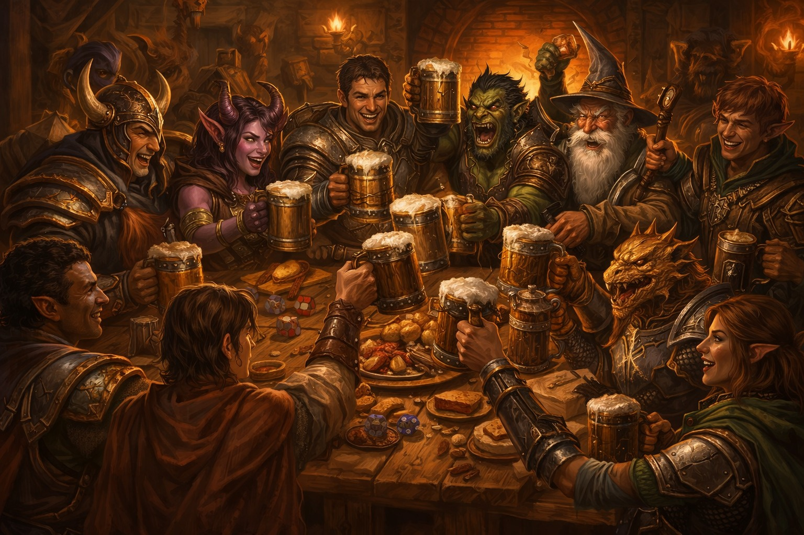
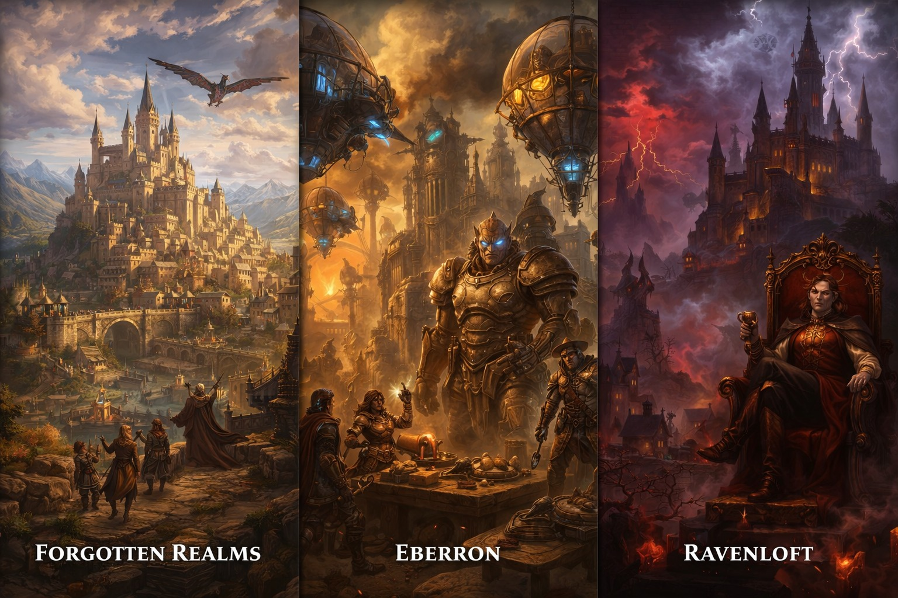

Sobre Dungeons & Dragons
Dungeons & Dragons (D&D) é um jogo de interpretação de personagens (RPG de mesa) criado em 1974, onde os jogadores vivem aventuras em mundos de fantasia cheios de magia, monstros, dragões e heróis.
Como funciona o jogo?
O jogo é conduzido por um Mestre de Jogo (DM), que cria a história e o mundo onde os jogadores interagem. Os jogadores criam personagens com habilidades, equipamentos e histórias de fundo, e juntos, eles enfrentam desafios, exploram masmorras, lutam contra monstros e completam missões.
Elementos principais
D&D é conhecido por seus elementos de fantasia, como raças (elfos, anões, humanos), classes (guerreiro, mago, ladino), habilidades especiais, magias poderosas e um sistema de combate tático. O jogo também enfatiza a narrativa e a criatividade dos jogadores, permitindo que eles moldem a história de acordo com suas escolhas e ações.

Ambientação
O cenário de D&D é vasto e diversificado, com mundos como Forgotten Realms, Eberron e Ravenloft, cada um com sua própria história, cultura e geografia. Os jogadores podem explorar cidades movimentadas, florestas sombrias, montanhas perigosas e masmorras cheias de tesouros e perigos.

Por que D&D é importante?
Dungeons & Dragons é mais do que apenas um jogo; é uma forma de arte interativa que promove a criatividade, a colaboração e a narrativa. Ele tem influenciado a cultura pop, inspirando livros, filmes, jogos de vídeo game e muito mais. Além disso, D&D é uma ótima maneira de socializar e se divertir com amigos, criando memórias inesquecíveis juntos.